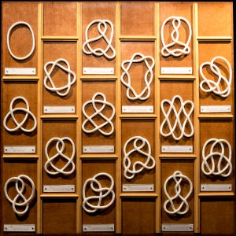

I hold an MSc in Mathematical Sciences from AIMS Rwanda, with a thesis on Stallings' Fibration Theorem for knot exteriors, supervised by Professor Ana García Lecuona (University of Glasgow). I also hold a Master's in Geometry from the University of Yaoundé I. Starting in July 2026, I will join the MIORPA programme at the University of Oxford, working with Dr. Christopher Couzens on new supergravity solutions using toric geometry. You can find more information in my curriculum vitae.
Email : first name [dot] middle name [at] aims [dot] ac [dot] rw
Address : Kigali, Rwanda
Phone : +250 781-934-981 & +237 651-381-679 (whatsapp)